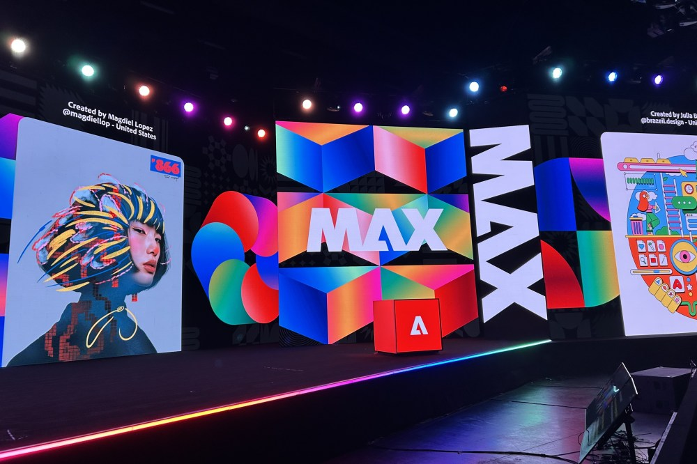

Adobe делает ставку на то, что творческие задачи будут ставиться обычным языком, а не через сотни кликов. Пользователь формулирует результат — например, «перемонтируй ролик под вертикальный формат и поправь цвет» — а ИИ-агент сам выполняет многошаговую работу в приложении. На MAX 2026 объявлено три направления: Creative Agent для творческих задач, расширенный по всей Creative Cloud и Firefly, Productivity Agent для рутины и CX Enterprise Coworker для маркетинговых команд внутри Adobe GenStudio.
Самое интересное для индустрии — анонс локальных MCP-интеграций (Model Context Protocol): сторонние агенты, которыми человек уже пользуется, смогут вносить правки напрямую в родные файлы проектов Photoshop, Illustrator, Premiere и After Effects. В официальном релизе Adobe отдельно подтвердила коннекторы к агентам Anthropic и OpenAI и расширённые партнёрства с Google и Microsoft. То есть агентство сможет собрать собственный конвейер, где его агент работает в нативных PSD- и PRPROJ-файлах, а не в экспорт-копиях.
Вместе с агентами Adobe показала новые инструменты Firefly — видеозапись, звук, изображение и дизайн в одном окне с выбором среди ведущих моделей рынка. Показательно, что ключевую презентацию в Майами-Бич вёл уже будущий гендиректор Анил Чакраварти: он официально возглавит Adobe 1 декабря 2026 года, сменив Шантану Нараяна, который переходит на пост исполнительного председателя совета. Новому руководству досталась стратегия, где ИИ-агенты — центр продукта, при этом компания подчёркивает: работать ИИ в цепочке или нет, выбирает сам творец.